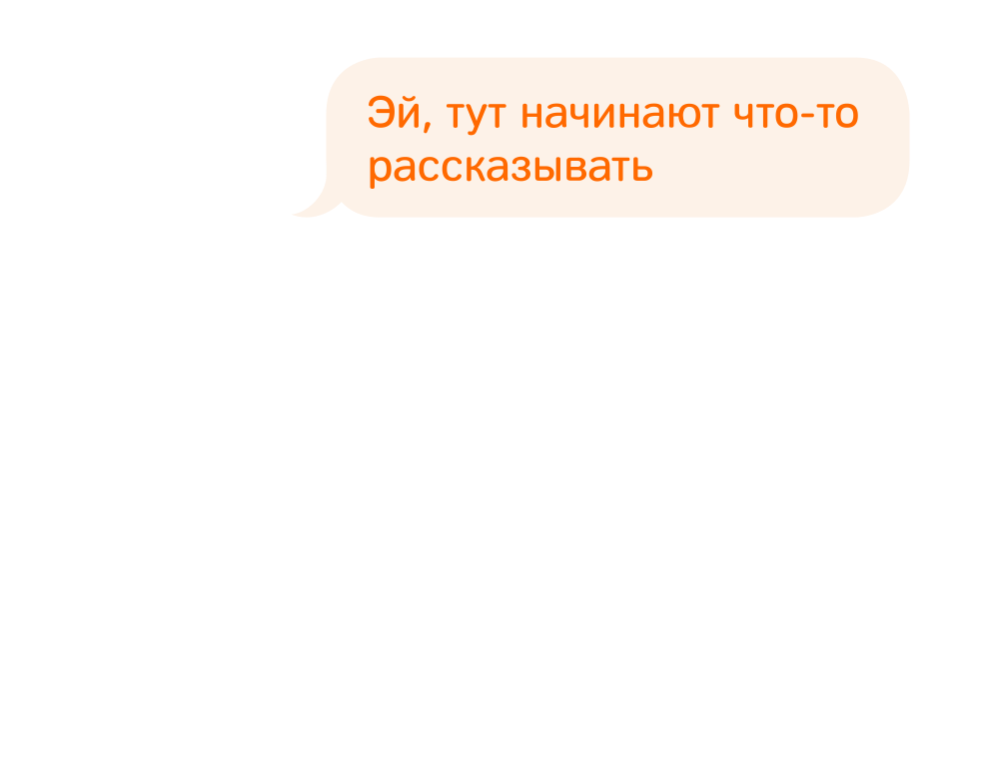

Мы
Обычно люди приходят в Додо Пиццу, чтобы просто поесть. Наши промоутеры раздают листовки про кусочек пиццы за двадцать рублей или ещё что-то выгодное. Мы делаем это как первый шаг, чтобы познакомиться.
Но для нас Додо — не только пицца. Это и пицца тоже, но в первую очередь это большое дело, которое вдохновляет нас, заставляет каждое утро просыпаться и с интересом продолжать работу.
В чем же наш интерес? Сейчас расскажем.
Идеальные ингредиенты
Почему мы так хотим познакомиться? Потому что дальше пицца делает всё сама. Люди видят, что она вкусная, и возвращаются снова. Нам главное первый раз это показать.
Вообще пицца — очень простая штука, её сложно испортить. Достаточно хороших ингредиентов и правильного теста. Это конструктор, если детали качественные, то и результат будет в порядке. Вот они, наши детали:
-
Тесто
Самая тонкая вещь. Главное - сделать его «живым». Это целый квест из граммов, градусов, процентов и часов с минутами. Процесс непростой, но у нас получается!
-
Моцарелла
Сыр в пицце - ключевой ингредиент. Мы используем настоящую моцареллу от российских поставщиков. Сыр должен тянуться, как на картинке.
-
Начинка
Есть два главных правила вкусной начинки: не экономить на начинке; фанатично соблюдать режим хранения. Это и весь секрет.
-
Томатный соус
Главное, что нужно знать про хороший томатный соус: он должен быть сделан из томатов. Звучит логично, но задумайтесь!
Одинаково вкусно в Москве и Сыктывкаре
Кто угодно может сделать вкусную пиццу. А шеф-повар итальянского ресторана сделает и вовсе шедевр. Он молодец. Но представьте, что вам нужно сделать вкусную пиццу в сотнях пиццерий, за сотни километров друг от друга. Это наш случай, у нас их вон уже сколько:
Пицца должна быть вкусной и везде одинаковой. Пиццерии должны быть одинаково уютными, кассиры неизменно приветливыми, а курьеры — расторопными.
И это как раз сложно. Но мы умеем!
Единые стандарты
Цифровые технологии помогают нам вовремя замечать, если что-то идёт неправильно. Но как понять, что правильно, а что нет? Для этого у нас есть стандарты. Вот, например, про мытьё рук:
Наши стандарты — это не какие-то заумные схемы и формулы, а супер-понятные правила. У нас их сотни, буквально про всё. Именно так мы умудряемся делать всё хорошо и одновременно быстро расти.
Открытость во всем
Кто угодно может написать сотню правил, но само по себе это не работает. Нужна сила, благодаря которой стандарты будут соблюдаться. Для нас этой силой стала открытость. Мы сделали всё настолько прозрачным, что отступать от стандартов просто не получается.
В чем конкретно это проявляется?
Именно открытость заставляет нас выполнять обещания, соблюдать стандарты и работать строго в рамках закона. Но открытость для нас — не просто модный тренд. Это наше глубокое убеждение, философия и ценность, которую мы хотим нести миру.
Почему Додо
Знаете почему мы называемся в честь этой странной птицы? Додо, или маврикийские дронты, были очень доверчивыми и наивными, и вымерли в конце семнадцатого века с приходом колонизаторов.
Жаль, что маврикийские дронты не дожили до сегодняшнего дня. Мы уверены: сейчас доверие, отзывчивость и открытость — серьёзные конкурентные преимущества. Именно благодаря открытости и доверию, мы смогли за семь лет стать самой крупной сетью пиццерий в России. Звучит как парадокс, но мы видим в этом закономерность.
Мы хотим жить и работать в мире, где люди доверяют друг другу. Мы создаём такой мир, делая очень простой и приземлённый продукт: пиццу. Это лишь способ жить так, как мы хотим!

Если вы испытываете похожие чувства — прочитайте нашу книгу, и может быть мы станем друзьями. Если считаете, что это полная ерунда и так не бывает — всё равно прочитайте и расскажите, что думаете.